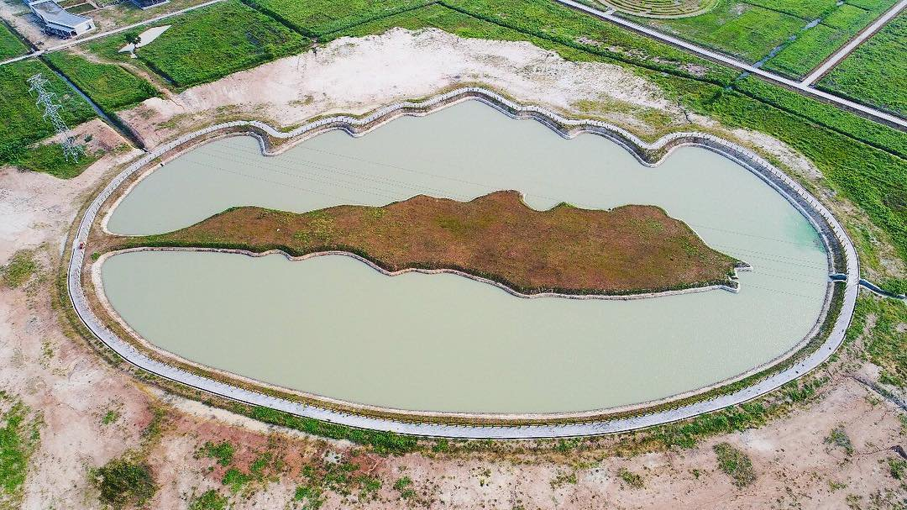
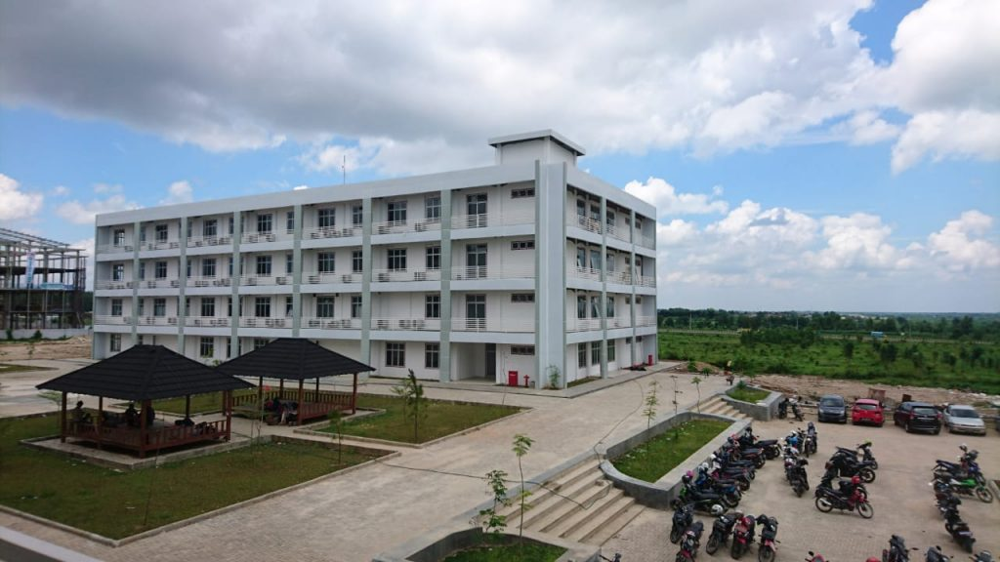

Perkenalkan Saya

Hai saya mahasiswa Institut Teknologi Sumatera yang tinggal di bandarlampung, saya lahir di bandarlampung tanggal 20 september 1999,saya bercita cita menjadi seorang pramugari karena saya ingin berkeliling duniaaaaaa :)
SelengkapnyaInsitut Teknologi Sumatera dan Kementerian Pekerjaan Umum bekerjasama membangun 6 (enam) embung sebagai upaya konservasi sumber daya air di daerah sekitar ITERA. Selain itu, embung ITERA digunakan sebagai sarana rekreasi, arena olah raga dan pembibitan ikan.
Kebun Raya ITERA yang berdiri di atas lahan seluas 75,52 hektare, sudah memiliki beberapa fasilitas pendukung konservasi tumbuhan, seperti rumah kaca pembibitan, paranet pembibitan, kantor dan gudang pembibitan serta fasilitas pendukung seperti gerbang dan akses jalan.

Dalam penelitian dan pengabdian kepada masyarakat,ITERA memiliki fasilitas 4 (empat) laboratorium pengujian dan 1 (satu) laboratorium multimedia terpadu. 4 (empat) laboratorium pengujian yaitu : Laboratorium Mekanika Tanah, Laboratorium Struktur, Laboratorium Transportasi dan Laboratroium Hidraulika. 